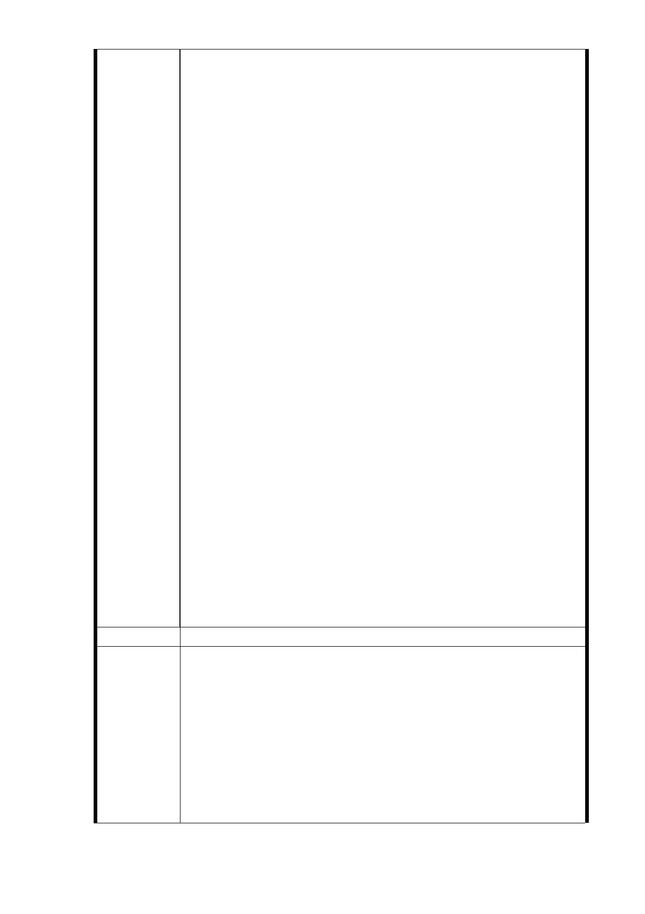

差不齊之難看市容景觀，若將其納入「聯開案」內，則
勢將增加未來房屋價值 20％以上，該七層樓建物土地之
「土地價值貢獻極大」。
捷運「聯開案（併都更案）」之基本原則，即是「一坪
換一坪」，若因時空背景不同，而為地主住戶爭取更大
權益，此亦為市府主管機關所當為之責任，不容推卸，
更遑論說出＂「個案」不得破壞「通案」基本原則＂之
謬論。
五、另就「捷運局」訂出：
所有地主住戶之房屋面積分配，以「一坪換一坪」為上
限實在是主管機關態度傲慢之具體表現，此種「官僚」
心態更應立即去除改進！
六、既然，「捷運聯合開發案」係「地主出地、建商出錢、
捷運（局）監督」之模式進行，為維護地主及各方權益，
陳情人等亦提出強烈要求，「捷運局」應提出至少三家
品質、信譽較優良之建商，供地主住戶評選回饋住戶
最優條件之適合建商承攬工程，並減少弊端。
謹此：
本地號住戶自始即再三提出陳情，要求「捷運局」在不
損及住戶基本權益，並獲得充分保障情況下，始同意被
納入該「聯開案」範圍內。
而市政府「捷運局」為捷運聯合開發案有關地主住戶「權
益分配」之權責單位，自應充分保障七層電梯大樓地主
住戶之權益。
特懇請：
台北市都市計畫委員會
更應要求「捷運局」務必充分做到，此實乃政府保障人
民基本權益之核心價值。
建議辦法
（一）依本市都市計畫委員會 102 年 9 月 17 日召開「捷運系
統萬大─中和─樹林第一期路線與信義線東延段都市
計畫變更案土地開發區（捷）基地容積獎勵原則」討
市府回應
意見
論會議，依多數委員共識及分析結果，原則係「土地
開發區（捷）基地容積獎勵，依原建築容積（原容如
低於法容以法容為準）+0.5 倍法容+捷運獎勵之原則
辦理，操作上仍應加註以 1 坪換 1 坪為上限（平均
值）」。故 351 地號土地依前述原則辦理時，除可保障
原建築容積外，不需要依照獎勵之項目及評定基準，
- 49 -